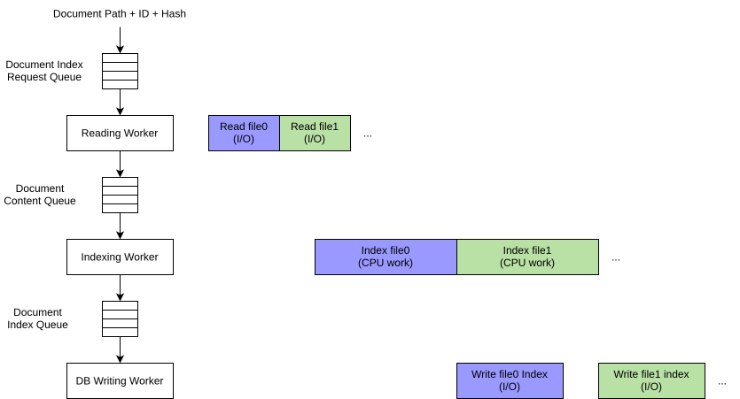
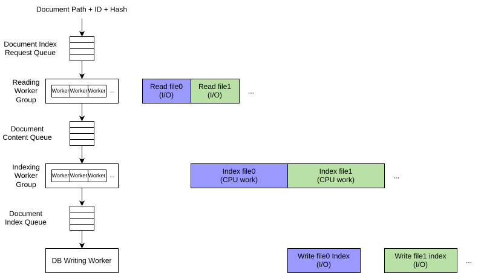

The indexing stage of Docfd workflow is responsible for the construction of the core data structures behind Docfd search engine, which are the dictionary (collection of words observed across all documents) and the inverted indices for documents (mapping from words to positions within the documents).
The overall workflow inside the indexing stage begins with document discovery, identification of documents to be indexed, and finally the core indexing work is handled by the indexing pipeline to deal with the mix of I/O-bound and CPU-bound tasks efficiently.
TODO
Document content is tokenized based on:
Docfd uses the typical pipelining setup to avoid CPU bound tasks waiting on I/O bound tasks and vice versa.
We begin by examining the naive setup:
This is a classic case of unnecessary delay where I/O of a work item waits for CPU work of the previous work item, and vice versa.
A more ideal timeline would look closer to:
This is straightforward to implement by using an actor model design:

Finally, we also try to saturate I/O and CPU by changing the first two layers into using multiple workers intead of just one worker. The final DB write layer remains a single worker as there is no benefit to parallel writes for SQLite DB unless WAL is used, but WAL is not enabled for simplicity and some minor reliability issues observed during development (likely some errors on my end, but did not have time to investigate fully).

TODO: Version 7.1.0: Explain why GZIP compression was added to the JSON index and what it improved without changing the fully materialized index design.
TODO: Version 9.0.0-rc1: Explain why JSON+GZIP was replaced by CBOR+GZIP, and which serialization costs or limitations remained.
TODO: Version 9.0.0: Explain why CBOR+GZIP was replaced by SQLite after the in-memory index reached 1.9 GB on the 1.4 GB PDF corpus, including the reduction to 39 MB and the resulting search-speed trade-off.
TODO: Version 10.0.0: Explain why the database schema was redesigned, how this reduced index size by roughly 60%, and why the change required rebuilding existing indexes.
TODO: Version 12.0.0-alpha.13: Explain why a global word table was introduced, how it reduced duplication and improved search speed, and why this caused another breaking database change.
TODO: Add measured data for index size, startup time, search latency, and memory use. State the corpus and hardware used for each measurement.